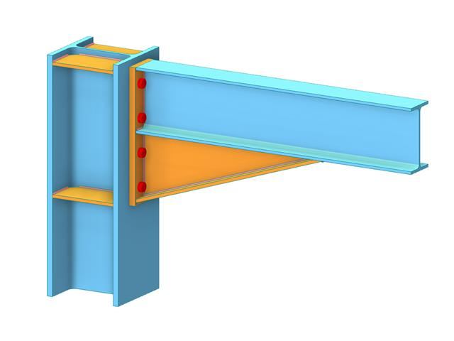
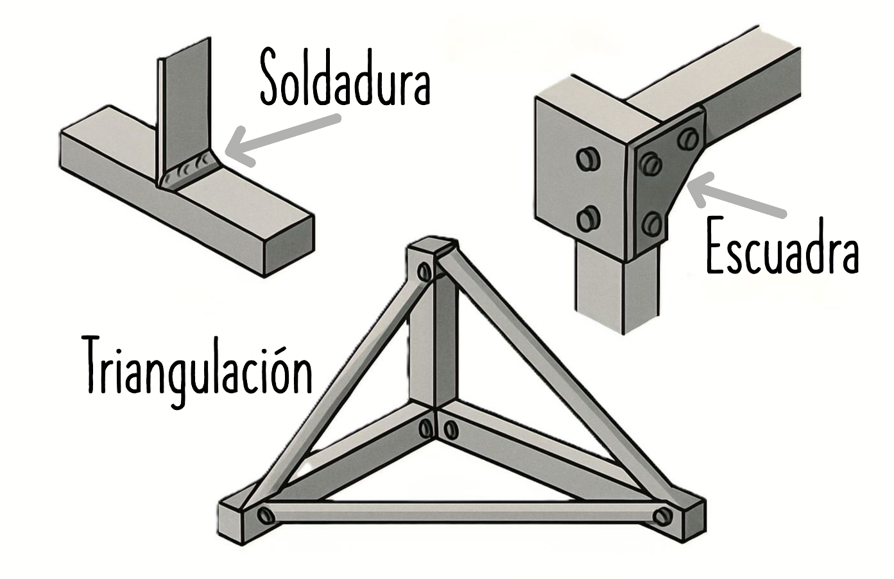

9. LA RIGIDEZ EN LAS ESTRUCTURAS
La rigidez es una de las cualidades esenciales que debe cumplir una estructura para funcionar correctamente, junto con la resistencia y la estabilidad.
¿Qué significa rigidez?
Rigidez
Significa que la estructura no se deforma (o solo lo hace dentro de unos límites muy pequeños) al recibir las cargas o fuerzas para las que fue diseñada.
- Una estructura rígida mantiene su forma y geometría durante su uso.
- Aunque siempre hay pequeñas deformaciones, éstas no deben impedir que la estructura cumpla su función.
- Una estructura puede ser muy resistente, pero si no es rígida, se puede deformar tanto que resulte inútil o peligrosa.
Ejemplo:
Un puente demasiado flexible podría oscilar o combarse al pasar vehículos, aunque no llegue a romperse.
¿Por qué es importante la rigidez?
- Evita deformaciones que comprometan el uso, la seguridad o la comodidad (como movimientos excesivos en puentes o edificios altos con viento).
- Aumenta la durabilidad de la estructura, evitando que las piezas cedan prematuramente.
- Mejora el comportamiento estructural ante esfuerzos propios y externos.
¿Cómo se consigue la rigidez?

Para que una estructura sea rígida no es suficiente con elegir buenos materiales...
...hay que prestar especial atención a las uniones de los elementos estructurales.
Las uniones son puntos clave porque:
- Si son débiles o flexibles, la estructura perderá rigidez aunque sus elementos sean muy robustos.
- Una mala unión puede permitir giros o desplazamientos que debilitan toda la estructura.
Métodos para conseguir uniones rígidas
1. Soldadura
- Se funde el material de las piezas (normalmente metal) para unirlas formando un todo continuo.
- Proporciona una conexión fija y muy resistente.
- Usada en estructuras de acero como puentes, torres o vigas metálicas.

2. Escuadras o piezas de refuerzo
- Son piezas, normalmente metálicas, en forma angular o de cartela, que se colocan en esquinas, uniones y empalmes.
- Evitan giros en las uniones y reparten las cargas.
- Muy frecuentes en estructuras de madera, acero o aluminio.
3. Triangulación
- Disposición de barras o perfiles formando triángulos en la estructura.
- El triángulo es el polígono más indeformable, por lo que mantiene la geometría en uniones y marcos.
- Utilizada en torres eléctricas, grúas, puentes metálicos y cubiertas.
Diferencia entre resistencia y rigidez
| Propiedad | Qué significa | Ejemplo |
|---|---|---|
| Resistencia | Capacidad de no romperse aunque actúen fuerzas | Un cristal puede resistir mucho peso colocado uniformemente |
| Rigidez | Capacidad de no deformarse en exceso | Una viga de acero muy alta apenas se curva con la carga |
Resumen
- La rigidez es tan importante como la resistencia: evita deformaciones que puedan impedir el uso de una estructura.
- Se logra reforzando las uniones con soldaduras, escuadras y triangulación.
- Una unión débil hace que toda la estructura pierda rigidez, por muy buenos que sean los materiales. ```
⁂